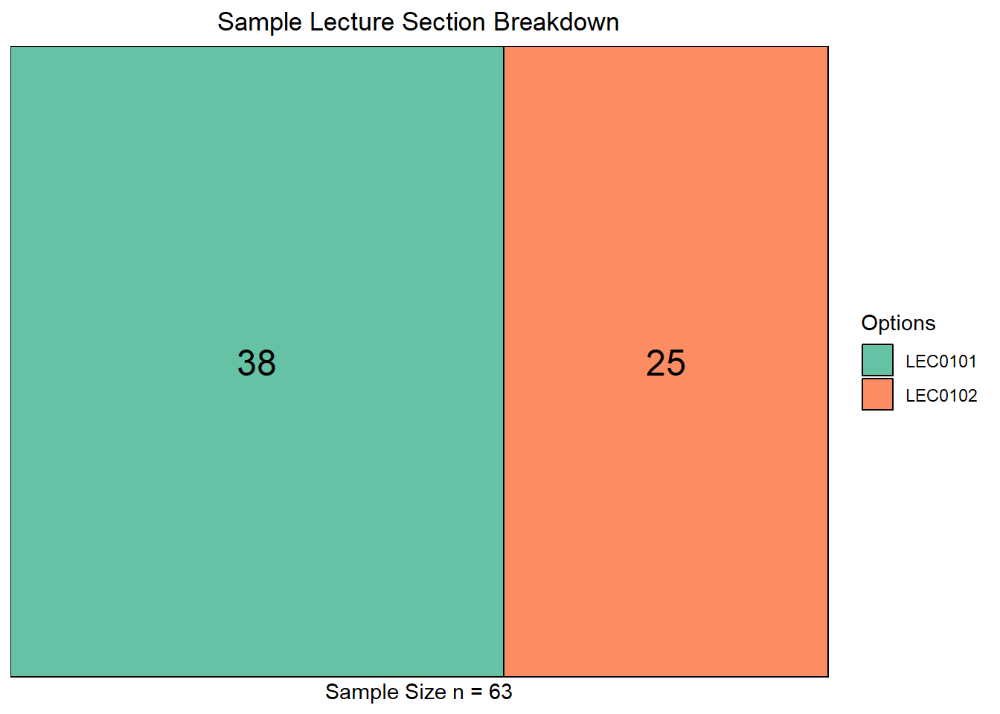
Various Demographic Factors Effect on Students’ Participation In Extracurricular Activities
Data Collected from STA304H5F in 2024
Abstract
It is known that for students to have a well-rounded university experience, participation in extracurricular activities is vital, not only for academic but personal growth. However, student participation in extracurricular activities depends on a number of factors. Some include scheduling and time-commitment factors, commute factors and the diversity of student activities/clubs. This study aims to explore this by investigating the reasons that students select certain extracurricular activities at the University of Toronto Mississauga (UTM) campus. An anonymous online survey on Google Forms was created for students in a third-year Statistics course to complete. Findings showed that there was no significant relationship between campus distance and program of study with extracurricular involvement. Although there was some gender influence on the participation of extra-curricular activity, this variation is not statistically relevant as the p-value was 1. On the other hand, there was a statistically significant monotonic relationship (rho = 0.937) between time commitment and activity count. As students increase their time commitment, so does their participation in ECAs. Although results produced minimal significant findings, we believe that this is a valiant step in the right direction towards investigating student participation at UTM.
1 Introduction
An important part of having a healthy life in university is maintaining a balance between school, work, and social life. Among other aspects, a major part of many university students’ social lives is extracurricular activities (ECAs). Being such a major part of students’ social lives, determining what factors can negatively impact student participation in ECAs is a critical step in helping minimize negative impacts on students’ wellbeing. In our study, we focused on students in STA304 students in Fall of 2024 and examined their levels of participation in various kinds of ECA’s. In particular, we analyzed if various demographic factors affected students’ participation in ECAs. As UTM is primarily a commuter campus, of special interest was students living distance from campus. To conduct our study, during the first three weeks of October 2024 we distributed a survey on the STA304 Piazza Discussion board to collect data on student demographics factors and information relating to individual participation in ECAs. Our study consisted of three research questions.
1.1 Research Questions and Hypotheses
- Research Question 1: What is the most preferred type of extracurricular activity, and do demographic factors influence student preferences for certain extracurricular activities?
- \(H_{0}\): Student demographic factors have no effect on participation in extracurricular activities.
- \(H_{a}\): Participation in extracurricular activities is affected by demographic factors.
- Research Question 2: Does proximity to campus affect participation in extracurricular activities?
- \(H_{0}\): Proximity to campus has no effect on participation in extracurricular activities.
- \(H_{a}\): Students living further from campus will have lower participation rates.
- Research Question 3: Does timing/scheduling of extracurricular activities impact student participation in extracurricular activities?
- \(H_{0}\): Timing/scheduling of extracurricular activities has no impact on student participation.
- \(H_{a}\): Participation in extracurricular activities is affected by their timing/scheduling.
2 Data
2.1 Methodology
Data collection began in the first three weeks of October 2024, an online anonymous survey on Google Forms was created for participants to complete. This survey was created in order to investigate the reasons that students select and participate in certain ECAs. This online survey was posted to a Piazza thread where students can easily locate the survey link. Although using Stratified Random Sampling where the strata were the STA304 lecture sections (ie. LEC0101 and LEC0102) was proposed, the sampling method that was truly used was Simple random sampling. Nevertheless, randomness was ensured as the link to the survey was posted to Piazza where everyone had the equal opportunity to complete the survey and be chosen for the study. We collected a sample of 63 students. The survey consisted of 10 questions asking for details on their lecture section, demographic information, program of study, and distance from the UTM campus. We also included questions on the number, types of activities and the time commitment of the ECAs they are involved in. To encourage students to complete our online survey, we asked participants to share a link to their group’s survey, which we would complete in return.
For computing the sample size from population size of \(N = 200\), we chose a bound of \(B = 0.1047\) and calculated with an approximation of \(p = 0.5\). Calculating a sample size using \(n = \frac{Npq}{(N-1)\frac{B^2}{4}+pq}\) gives \(\frac{200*0.25*0.25}{(200-1)*\frac{0.1047^2}{4}+0.25} = 62.8643 \approx 63\)
3 Analysis
The majority of the analysis for our research questions is based on the various student demographic factors. As such, it is worthwhile to go over, in a preliminary fashion, the results of our survey to give further background on the study before continuing into the analysis of the research questions.
We had a slightly higher response rate from students in LEC0101, approximately a 6:4 ratio.
Our sample indicated a higher percentage of males vs females, with no students responding with Other or Prefer Not to Answer
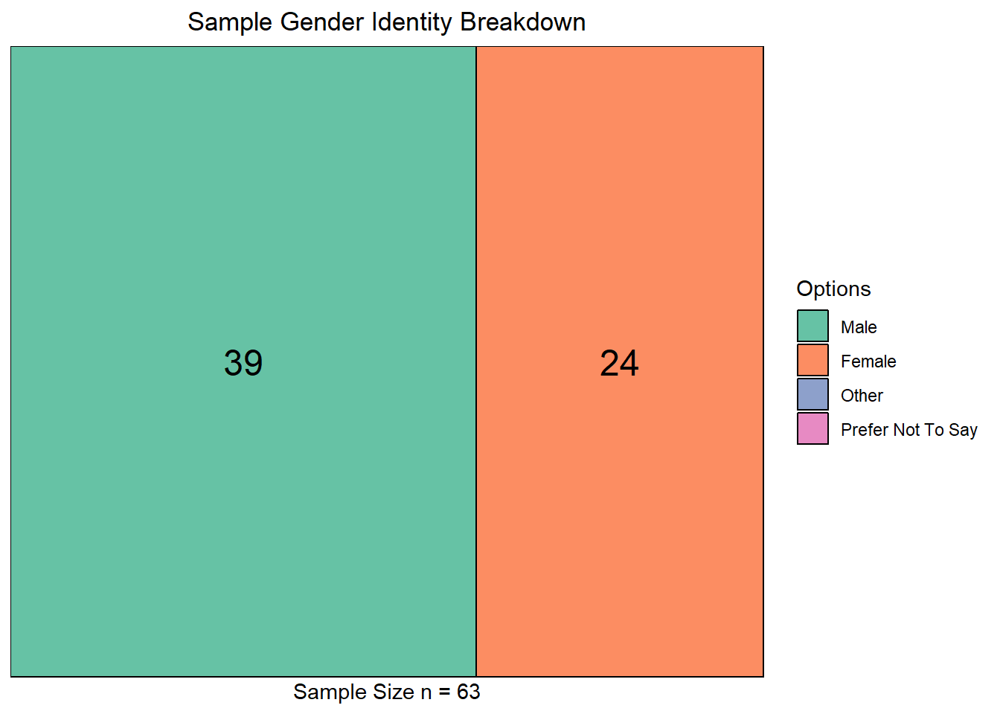
Students picked up to 2 majors, with STA seeing a significant share of responses.
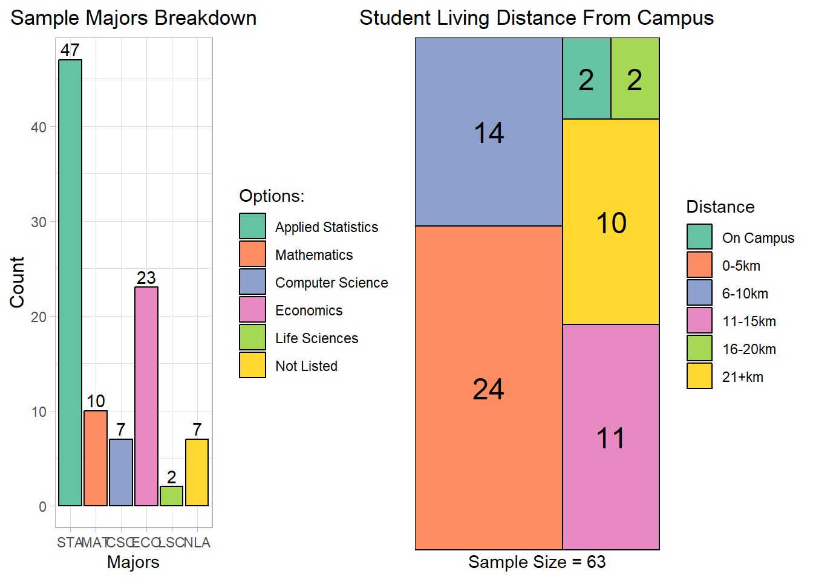
We had almost an even balance of Domestic and International students in our responses.
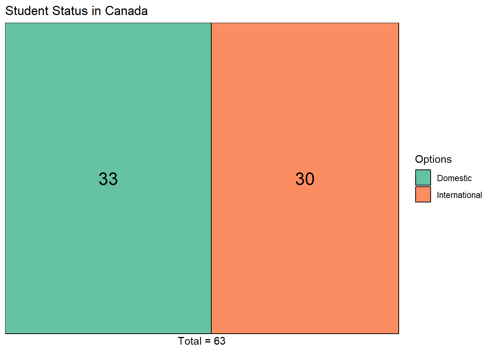
Finally, we recorded students living distance from campus.

3.1 Research Question 1
In this question we aimed to explore and find out which is the most preferred types of extracurricular activities whilst also examining whether demographic factors such as major, demographics and student status influence the preference for certain extracurricular activities. By conducting this analysis we hope to gain an understanding of the sample and the wider population in their extracurricular selection habits.
NOTE: For easy analysis and ability to come up with clearer conclusions, the Major column and the activity column were split into different rows.
For the most preferred type of extracurricular activity, we were able to get the count of students in the different extracurricular activities and display a graph showing the counts of students in each extracurricular activity.
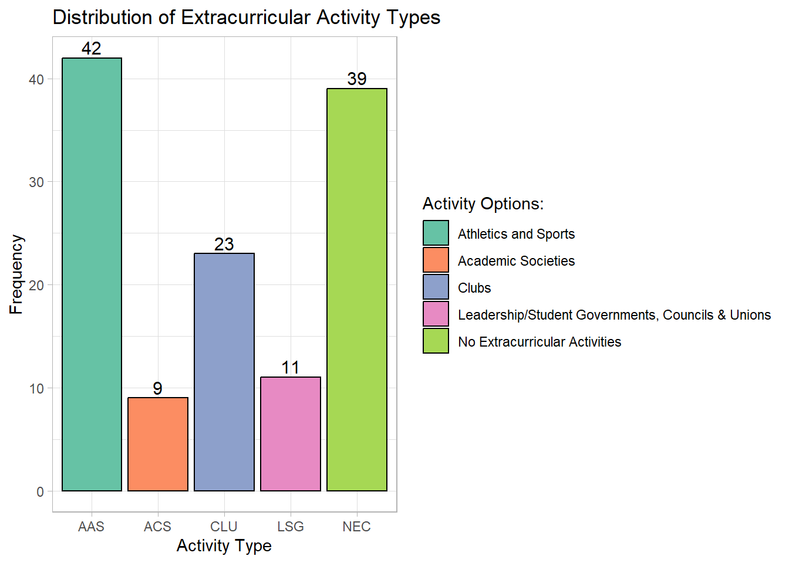
According to the bar plot, the most popular extracurricular activity among students was Athletics and Sports (AAS) with 42 students and the least popular extracurricular activity is Academic Societies (ACS) with 9 students. It was also particularly interesting to observe that most students do not participate in Extracurricular Activities, making the NEC category second in popularity.
To investigate the proportion of students participating in each activity by demographic factors like Major, Student Status and Gender Identity, we used two statistical tests, namely ANOVA and the T-Test.
Before we began with our tests we first conducted preliminary assumption tests.
3.1.1 Testing for the Significance of Majors on Activity Proportion using the ANOVA Test
The Assumptions of ANOVA are:
- Normality: The data within each group should be normally distributed
- Homogeneity of Variances: The variance of data within each group should be equal.
- Random Sampling: Observations from each group have been sampled randomly and are independent of each other. (When we were collecting our sample this was already put into account)
To test for Normality we used a Q-Q residuals plot.
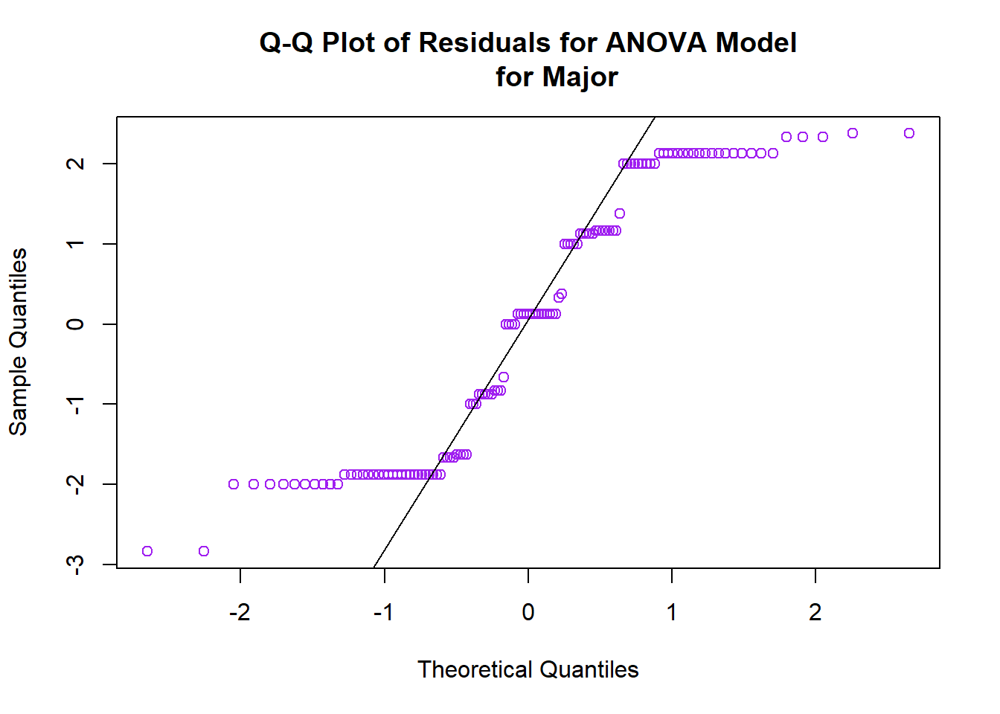
From the plot we can observe that the points almost follow a straight a line indicating that the residuals are normally distributed.
To test the equality of variances within each group we used the Levene Test.
Null Hypothesis (\(H_{o}\)) : The population variances between the groups are equal.
Alternative Hypothesis (\(H_{1}\)) : The population variances between the groups are different.
| Df | F value | Pr(>F) | |
|---|---|---|---|
| group | 5 | 0.33924778365995 | 0.88821348003483 |
| 118 |
We found that our F-statistc was 0.8865 and a p-value of 0.5433. Since the p-value is greater than the significance level of 0.05 we fail to reject the null hypothesis. This suggests that the variances in Activity Preferences across the groups are not signficantly different. Therefore our assumption of homogeneity of variances is satisfied.
We then conducted the ANOVA Test to determine whether there are any significant differences in the mean proportions of student Activity Proportion and their respective majors.
| Df | Sum.Sq | Mean.Sq | F.value | Pr..F. | |
|---|---|---|---|---|---|
| major | 5 | 11.3293 | 2.26586 | 0.804024073303128 | 0.54898078588717 |
| Residuals | 118 | 332.5417 | 2.81815 |
From the ANOVA Analysis we can see that the F-statistic was 0.8040 and a p-value of 0.5940. Since our p-value is greater than α = 0.05 we conclude that the differences in mean activity preferences across majors are not statistically significant meaning that we fail to reject the null hypothesis.
The box plot below is a visual representation of the activity preferences across the different majors. The overlap of the boxes heavily suggests that there is no significant difference in activity Preferences between majors
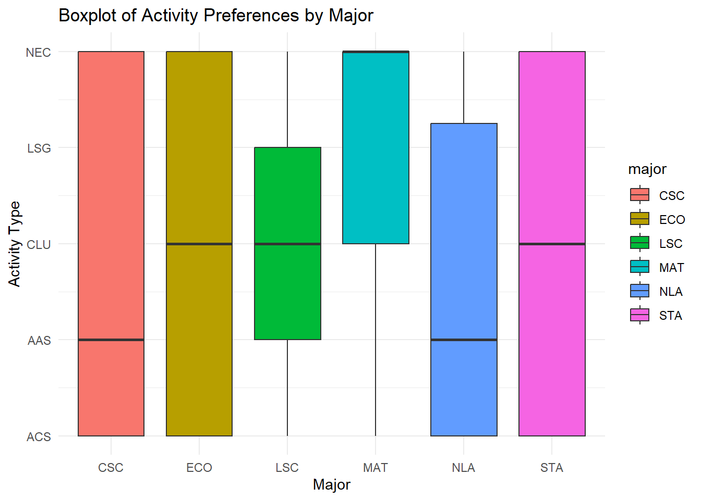
3.1.2 Testing for the Significance of Gender on Activity Proportion using the T-Test
Before we begin with analysis, we must conduct preliminary tests to ensure that we are fit to use this test.
Assumptions of the T-test are:
1. Random Variables: The observations must be independent.(When sampling we took this into account)
2. Normality: The data in each group should be normally distributed.
3.Equality of Variances - The variances in the two groups should be approximately equal. 4. The dependent variable should be measured on an interval or ratio scale.(This has been met as our dependent variable is the proportions of the people in each activity type)
Null Hypothesis (\(H_{o}\)) : The population means between the groups are equal.
Alternative Hypothesis (\(H_{1}\)) : The population means between the groups are different.
| Gender | W Statistic | p-value |
|---|---|---|
| Males | 0.8573073 | 3.42e-05 |
| Females | 0.7645068 | 0.00e+00 |
We conducted the Shapiro-Wilk Test to determine if the distribution in both groups is normal. We were able to determine that both groups were not normal as both their p-values are below the significance level of 0.05. Showing that the normality is not satisfied for both groups.
To test the second Assumption of equality of variances we used the Levene Test.
| Df | F value | Pr(>F) | |
|---|---|---|---|
| group | 1 | 6.19201670921327 | 0.0141815438250056 |
| 122 |
With an F-statistic of 6.192 which is quite high indicating that there is a big difference between the two groups, we got a p-value of 0.0142 which is less than 0.05 suggesting that the variances in activity preferences between males and females are significantly different.
Since our variances aren’t equal and the normality assumption has also been violated we will conduct our significance test using the Welch t-Test.
| T_Statistic | DF | p_value | MEAN_FEMALE | MEAN_MALE | |
|---|---|---|---|---|---|
| t | 0.8614468 | 111.3324 | 0.3908436 | 3.125 | 2.868421 |
With a T-statistic of 0.8614, degress of freedom 0f 11.33 and a p-value of 0.3908, we failed to reject the null hypothesis since p-value is greater the significance level of 0.05. This therefore indicates that there is no significant difference in the mean activity preferences between females(mean = 3.125) and males(mean = 2.8684). Therefore Gender doesn’t influence peoples extracurricular choices.
Aside from the overlapping of the boxplots they also have a almost similar medians further showing that there is no significant difference in activity preference between the two genders.
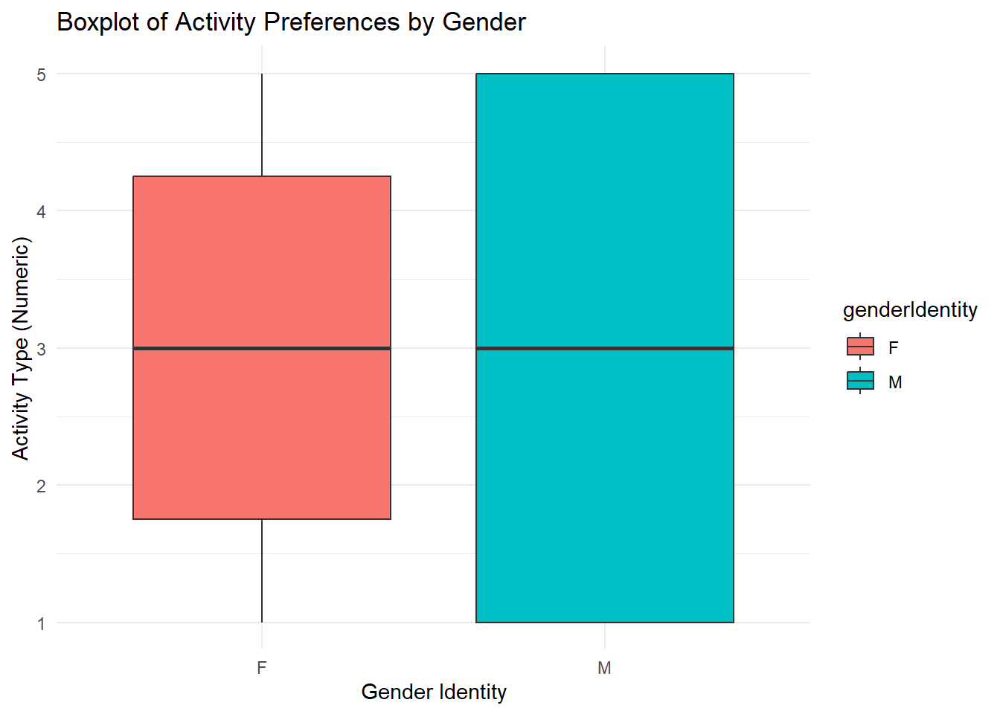
3.1.3 Testing for the Significance of Student Status on Activity Proportion using the T-Test
We conducted preliminary tests before using the test and our results are as shown below.
| StudentStatus | W_Statistic | P_Value |
|---|---|---|
| D | 0.8061721 | 0e+00 |
| I | 0.7818220 | 1e-07 |
| Df | F value | Pr(>F) | |
|---|---|---|---|
| group | 1 | 0.0108893630670963 | 0.917061284237081 |
| 122 |
From our results of the Shapiro-Wilk test we can conclude that our results are not normal.This is because we can see that the p-value of domestic students(0e+00) and international students(1e-07) are both less than α = 0.05 allowing us to reject the null hypothesis.
For an F-value of 0.0109 and a p-value of 0.9171 we were able to conclude that we should reject the fail to reject the null hypothesis. This means that there is no difference in variances of activity preferences between the student status groups.
Since it failed the normality test, we opted to use the Wilcox test as the data isn’t normally distributed.
| W Statistic | P-Value | |
|---|---|---|
| W | 1428.5 | 0.01303 |
From the Wilcox Test of comparing the activity preferences between domestic and international students, with a W-statistic of 1428.5 and a p value of 0.01303 which is below the significance level of 0.05. This shows that there is a significant difference in activity preferences between domestic and international students.
From the boxplot below we can see that the medians between the two are different which validates the result that we got from the Wilcox result. Even though the boxplots are overlapping, there is more spread of activity preferences for international students compared to domestic students.
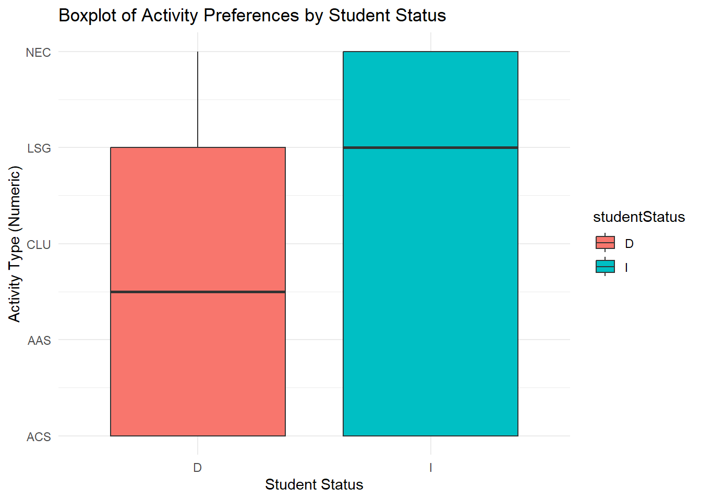
3.2 Research Question 2
In RQ2, we analysed if the proximity to campus affects one’s ability to participate in extracurricular activities.
- Null Hypothesis (\(H_{o}\)): Proximity to campus (campusDistance) does not affect participation in extracurricular activities.
- Alternative Hypothesis (\(H_{1}\)): Proximity to campus (campusDistance) has an effect on participation in extracurricular activities.
3.2.1 Campus Distance and Activity Count
Statistical Test: To evaluate this, we used the correlation analysis test between campus distance and the number of extracurricular activities using Pearson’s correlation test. Prior to conducting this test, we will verify the assumptions for the test first.
| Statistic | CampusDistance | ActivityCount |
|---|---|---|
| Min | 0.000000 | 0.000000 |
| 1st Quartile | 1.000000 | 0.000000 |
| Median | 2.000000 | 1.000000 |
| Mean | 2.193548 | 1.451613 |
| 3rd Quartile | 3.000000 | 2.000000 |
| Max | 5.000000 | 4.000000 |
The descriptive statistics suggest that most students live fairly close to campus (within 2-3 units) and participate in 1-2 extracurricular activities. This variability in both campusDistance and activityCount supports further analysis to see if there’s a relationship between proximity and participation.
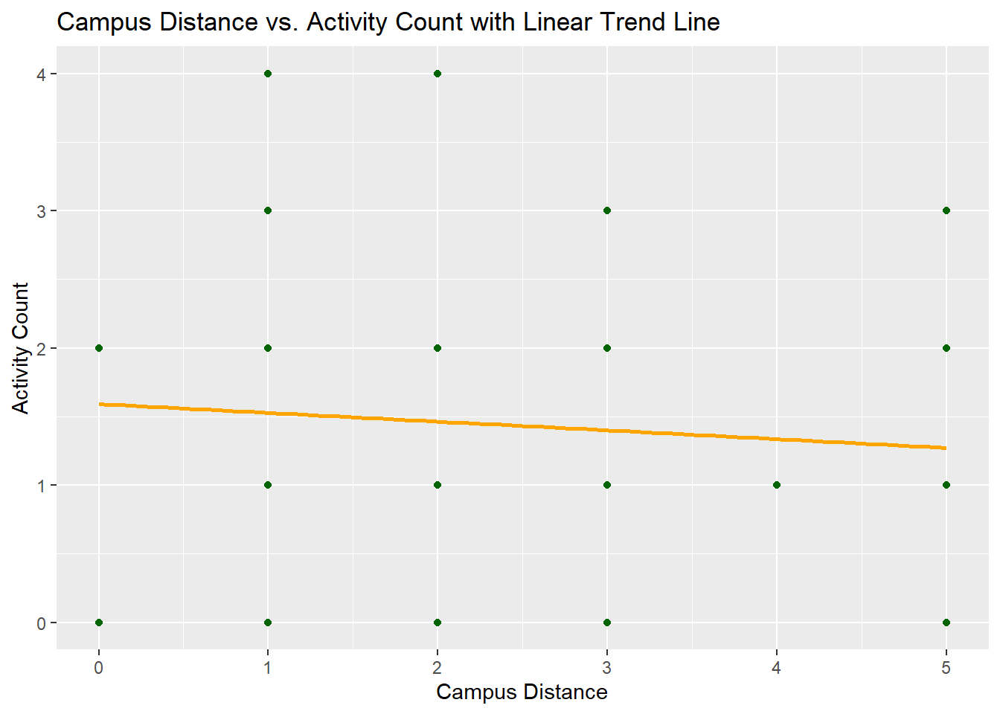
Moving on we inspect the relationship between the variables. As it can be seen from Figure 1, there seems to be no linear relation between the variables.

The Q-Q plot displays how the residuals (differences between observed and fitted values) align with the normal distribution. In this case, residuals do not fully align along the red diagonal line, indicating that normality is somewhat violated. The observed points deviate in a stepwise manner, particularly at the tails, which suggests potential non-normality in residuals.
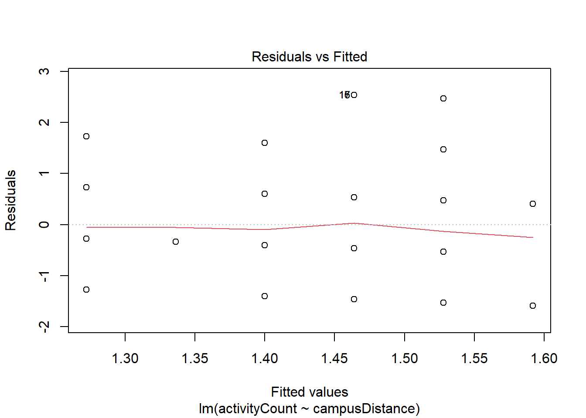
This plot helps in identifying any non-linearity, unequal variance (heteroscedasticity), or outliers. Here, residuals seem randomly scattered around the fitted line with no obvious pattern, suggesting homoscedasticity (constant variance). However, a few points like 33, 9, and 15 appear as potential outliers, which might influence the results.
Since there is non-normality between these variables, we proceed with Spearman’s rank correlation to analyze the association between campus distance and activity count.
| Test | Correlation_Coefficient | p_value | Significance |
|---|---|---|---|
| Pearson’s Correlation | -0.018 | 0.891 | Not Significant |
| Spearman’s Correlation | 0.025 | 0.847 | Not Significant |
The Spearman’s rank correlation test results are as follows:
- Spearman correlation coefficient: 0.025
- p-value: 0.847
This result indicates a very weak positive correlation between campusDistance and activityCount, but it is not statistically significant (p-value > 0.05). Therefore, we fail to reject the null hypothesis, suggesting no significant association between proximity to campus and participation in extracurricular activities based on this data.
3.3 Research Question 3
In RQ3, we analyzed if the the timing, the time spent on extra curricular activity affected one’s level of participation in extracurricular activities.
- Null Hypothesis (\(H_{o}\)): Time Commitment (timeCommitment) does not affect participation levels in extracurricular activities.
- Alternative Hypothesis (\(H_{1}\)): Time Commitment (timeCommitment) has an effect on participation levels in extracurricular activities.
We used the variables of student involvement (studentInvolvement) and activity count (activityCount) to represent the participation levels.
3.3.1 Time Commitment and Student Involvement
Statistical Test: To evaluate this, we used the correlation analysis test between time commitment and student involvement variables using Spearman’s correlation test. Before proceeding with the test, we will verify the assumptions for the test.
Normality of Variables: In our exploration we found that the variables of timeCommitment (TC), and studentInvolvement (SI) are not normally distributed as seen by the QQ plots in Figure 2 as they deviate from the normality line. Hence we proceeded to apply the correlation test using the Spearman’s rank coefficient instead of Pearson’s coefficient (requiring normality).

Monotonic Association: Next we confirmed the assumption of Spearman’s rank coefficient test requiring a monotonic relationship between the variables (timeCommitment and studentInvovlement). We found that the relationship between these variables was monotonic, specifically increasing as seen in Figure 3.
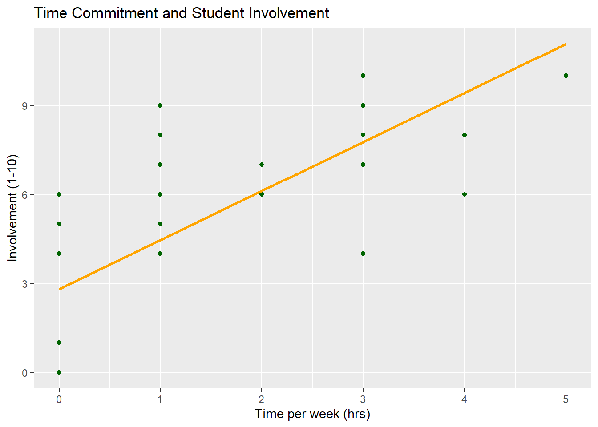
Results: As seen in Table 2, the Spearman’s rank correlation coefficient is 0.808, which indicates a strong positive correlation, pointing to a significant monotonic relationship between timeCommitment and studentInvolvement. p-value is < 0.05, hence the correlation is statistically significant, and we can reject the null-hypothesis.
| Statistic | Value |
|---|---|
| Spearman Coefficient (rho) | 0.744 |
| p-value | 4.608e-23 |
Hence students who spend more time in the activities have higher participation in extra curricular activities measured by the activity count, as suggested by the strong association based on our data.
3.3.2 Time Commitment and Activity Count
We wanted to check whether the time commitment and participation measured by the activityCount variable were correlated.
Statistical Test:
As discussed before, both the timeCommitment and activityCount variables did not meet normality assumptions, so we proceed with the Spearman’s rank correlation coefficient as our statistical test.
Normality of Variables:
To proceed with this test, we used QQ-plots to verify normality of timeCommitment (TC) and activityCount(AC). As seen in Figure 4 they are non-normal variables due to their deviation from the normal line.
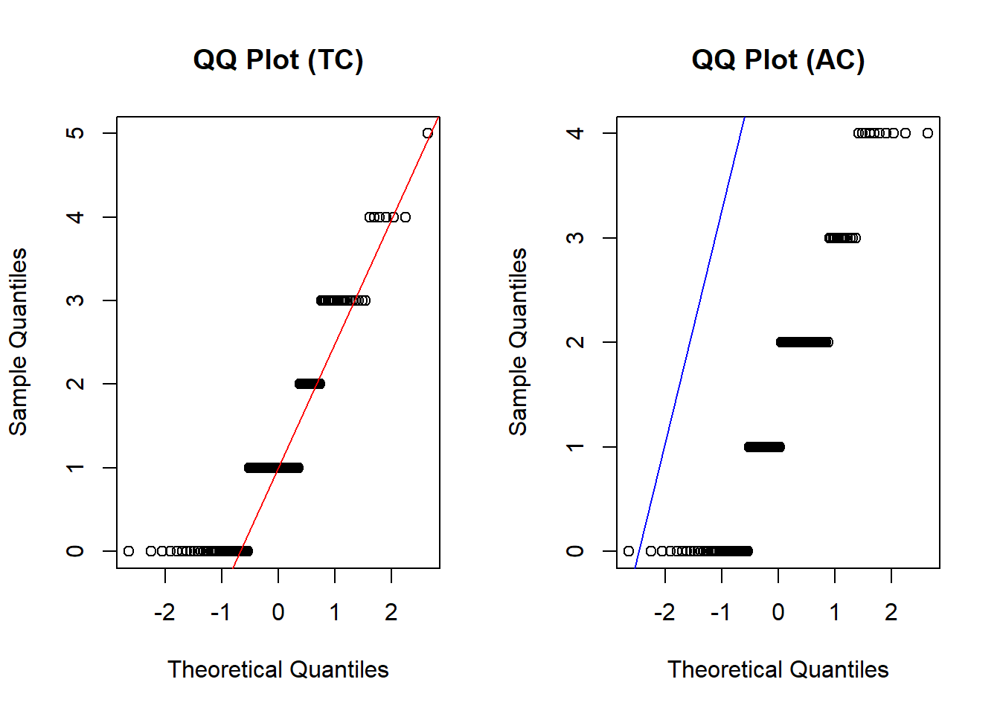
Monotonic Association: We confirmed that the relationship between these variables was monotonic, specifically increasing as seen in Figure 5
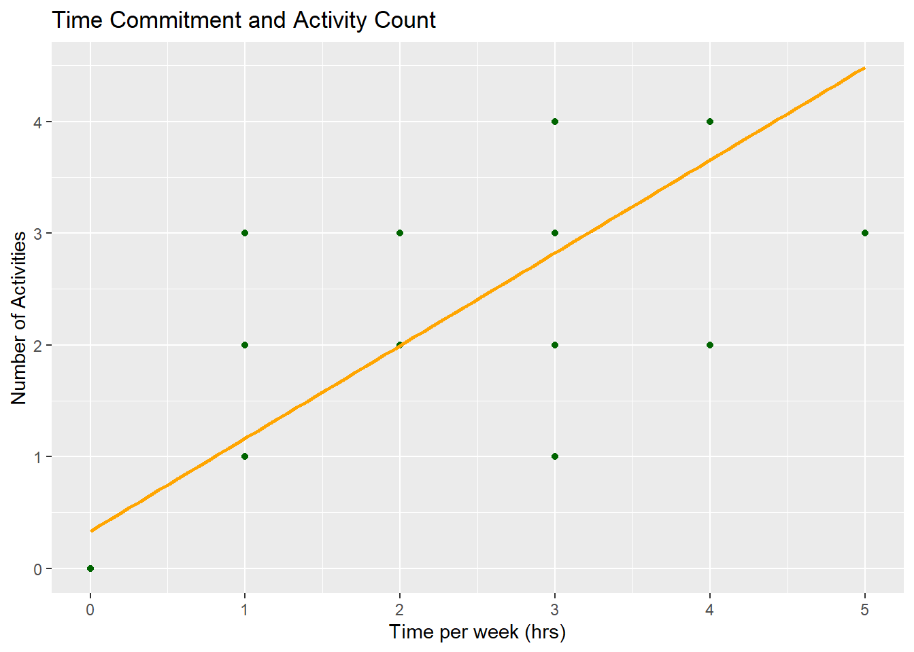
| Statistic | Value |
|---|---|
| Spearman Coefficient (rho) | 0.886 |
| p-value | 1.227e-42 |
Results: The test results show that the coefficient value is 0.937, indicating a strong positive relationship. This would mean as time commitment increases, so does activity count. The p-value is < 0.05 and indicates strong evidence against the null hypothesis, hence the relationship is unlikely due to chance.
Hence, these results indicate a strong, statistically significant monotonic relationship between time commitment and activity count. As students increase their time commitment, so does their participation measured by involvement.
4 Limitations
This study aimed to understand the reasons why students select and participate in ECAs at UTM. Although our results did not yield significant findings, several limitations may have contributed to this outcome: One such notable limitation is the way in which our data was collected. Although we proposed Stratified Random Sampling to collect our data, we ended up collecting with Simple Random Sampling. This likely lead to higher variance in our analysis and as a result, weaker conclusions. Another big limitation is the possibility of non-response bias in our sampling. Although the survey was distributed in a way that made it available to all students, in effect if certain students we’re choosing not to respond to surveys, their chance of being selected would be zero. In future studies, a better sampling methodology would have been to use StRS with either SRS or Systematic Sampling within the strata. If the study were to be repeated, there would be a number of changes we would like to make in addition to modifying the sampling methodology. We would change the student major question from multiselect to a select one and instruct students to select the major they commit the most time to; this would allow us to streamline and simplify the analysis. The question regarding days of the week could likely be dropped as it proved unbeneficial. This question could be instead replaced with one regarding what time of day students spend most in ECAs. Finally, we would likely change the question regarding students living distance from campus to commute distance. Since the study is interested in what factors affect ECA participation, considering commute distance would be more likely to provide useful information, as two students living the same distance from campus could have vastly different commute times and thus have different amounts of time they can spend on ECAs.
5 Conclusion
This study aims to explore this by investigating the reasons that students select certain extracurricular activities at the University of Toronto Mississauga campus (UTM). Analysis on the preferred types of extracurricular activities whilst also examining whether demographic factors influence these preferences showed that although the most popular type of ECAs amongst students was Athletics and Sports, demographic factors such as gender, student status and program of study. Regarding, the proximity to campus and one’s ability to participate in ECAs, there indicated a very weak positive relationship between the distance from campus and the number of activities that students engage in. Unfortunately, this relationship is not statistically significant. Finally, analysis on the time spent on ECAs indicates that there is a strong statistically significant relationship between time commitment and activity count. Notably, in the future, it would be more beneficial to consider time commuting as a variable of interest than distance from campus. Additionally, modifying the sampling methodology would be an important change if this study were to be repeated by other researchers.